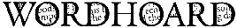
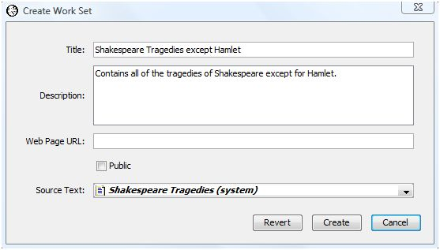

|
Finding Collocates and Multiword Units |

|
Table of Contents |

|
Comparing Texts |

|
|
|
You may want to compare the use of collocates in different texts. For example, you may want to check if the use of collocates of the lemma "think (v)" in Hamlet differs from their use in Shakespeare's tragedies as a whole. To do this, select "Compare Collocates" from the Analysis menu. The resulting dialog is the same as that for "Find Collocates" with the addition of a dropdown box for selecting the reference text. We select Hamlet as the analysis text and the work set Shakespeare Tragedies as the reference text.
The output table resembles that produced by the compare words facility. The difference is that the reported counts are the collocate counts, not the individual word counts. The same log-likelihood statistic is computed except using collocate counts instead of word counts. The interpretation remains the same as when comparing word counts.
For our example, only the collocate "it" achieves marginally significant overuse in Hamlet compared with the tragedies as a whole. In Hamlet, "think" and "it" appear together about twice as often as they do in the tragedies considered as a whole. None of the other collocates is significantly over or underused. If you rerun the analysis and enable the "Adjust chi-square for number of comparisons" option, even "it" will not be deemed significant.
You may display the results in a tag cloud. The tag cloud displays the collocates in different font sizes. The larger the font, the large the collocate's log-likelihood value. To create a tag cloud from the comparison output results, select the "Cloud" button at the bottom of the output table. Selecting the "Compress log-likelihood value range in tag clouds" option prevents dominant collocates from crowding out the display of less important collocates.
See the description of tag clouds in the comparing many words analysis for more details on tag clouds and the scaling used by WordHoard for log-likelihood values in tag clouds.
Since the Tragedies work set includes Hamlet, you may want to create a new work set that includes all the tragedies except for Hamlet. You can then compare the use of the collocates of the lemma "think (v)" in Hamlet with their use in all the other tragedies excluding Hamlet. (Note that your local version of WordHoard may not allow you to login or create work sets.)
To create the new work set, start by logging in. After logging in, choose "Work/New Work Set/Using Work Parts in Text" from the "Sets" menu to bring up a dialog which allows you to create a new work from the works and work parts in an existing work set. Set the title as you prefer and specify the existing work set "Shakespeare Tragedies" as the source of the work parts. Here we call the new work set "Shakespeare Tragedies Except Hamlet." Press the "Create" button to create the work set, which will contains the exact same works and work parts as the "Shakespeare Tragedies" work set.

Next we need to edit the work set we just created to remove Hamlet. Choose "Work/Edit Work Set" and select the work set you just created from the list of editable work sets at the top of the dialog. Now you can edit the work set you just selected by modifying the remaining dialog entries. The bottom dialog entry lists the works and work parts contained in the work set. You will see that all the tragedies of Shakespeare are checked. Scroll down and uncheck "Hamlet" to remove it from the work set. Press the "update" button to save the modified work set. Our work set now contains all the Shakespeare tragedies except for Hamlet.

We can rerun our analysis selecting the "Shakespeare Tragedies Except Hamlet" work set as the reference text. Again, only "it" appears to be marginally overused in Hamlet.
|
|
|